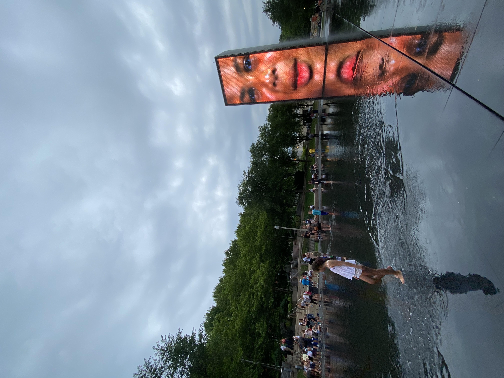
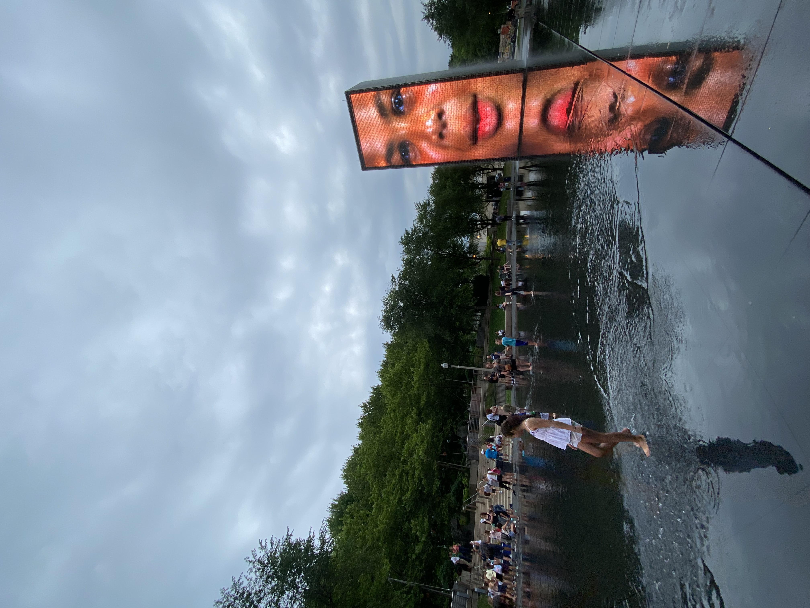

wrigley field
didn't really go inside, just saw the outside. i got a pretty good
picture of the stadium (exterior) with a polaroid.
some church
not too sure what church this is. i dont even know the road its on.
anywho, it looked beautiful as the sun set. where i live in
california, nothing resembels the architectural beauty of this.
face-statue. water-spout?
these were next to the silver bean. they face each-other and spit out
water every other minute. their faces change when they spit out the
water.
3 buildings
ima be honest... i also do not know where this was. obv downtown but i
took the pic because, again, i dont see architecture like this at
home.
downtown skatepark
not too sure what church this is. i dont even know the road its on.
anywho, it looked beautiful as the sun set. where i live in
california, nothing resembels the architectural beauty of this.


 
